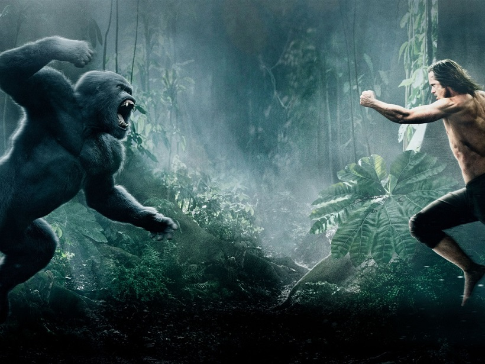

Chapter 5
Tarzan continues his studies for the next few years. By 18 he can read and print fluently, though he can't speak English or write in cursive. He also continues his stalking of Sabor and her cousins; they stalk him right back. Out of all the species in the jungle, Tarzan befriends only those in his tribe and Tantor the elephant , who sometimes lets Tarzan ride on his back.
Tarzan spots Sabor on his way home. He shoots several arrows at her and finishes the job with his knife. He defeated her then returns to his tribe to boast. " Tarzan is mightiest amongst you for Tarzan is no ape". Kerchak goes berserk at Tarzan 's boasting and he goes after Tarzan. Tarzan rushes to meet Kerchak's attack.
Click to help Tarzan defeat Kerchak
He stabs him below the heart. The two wild creatures struggle until Kerchak dies from his mortal wound. Tarzan is now King of the Apes.
Upon counsel of the elders he stays home for a month, but he hates having his freedom impinged by responsibility. Tarzan feels far removed from his tribe, and without Kala around he has no reason to stay save for preventing Terkoz, Tublat's son, from taking over the kingship.
Elephant

COMMON NAME: African elephant
SCIENTIFIC NAME: Loxodonta africana
TYPE: Mammals
DIET: Herbivore
GROUP NAME: Herd
AVERAGE LIFE SPAN IN THE WILD: Up to 70 years
SIZE: Height at the shoulder: 8.2 to 13 feet
WEIGHT: 2.5 to 7 tons
African elephants are the largest land animals on Earth. They are slightly larger than their Asian cousins and can be identified by their larger ears that look somewhat like the continent of Africa. (Asian elephants have smaller, rounded ears.)
Elephant ears radiate heat to help keep these large animals cool, but sometimes the African heat is too much. Elephants are fond of water and enjoy showering by sucking water into their trunks and spraying it all over themselves. Afterwards, they often spray their skin with a protective coating of dust.
An elephant's trunk is actually a long nose used for smelling, breathing, trumpeting, drinking, and also for grabbing things—especially a potential meal. The trunk alone contains about 100,000 different muscles. African elephants have two fingerlike features on the end of their trunk that they can use to grab small items. (Asian elephants have one.)
Help Tarzan defeat Kerchak
Repeatedly press A -> W -> D -> S
In daylight, lions vision is not much better than man. But at night, lions can see six times better in the dark than a human
If an adult elephant lifts a weight only using the strength of its mighty trunk, it can lift approximately 300kg. However, they have been shown to be able to carry about 500kg of logs.
Those who challenge the alpha male are apt to be cowed by impressive shows of physical power. He may stand upright, throw things, make aggressive charges, and pound his huge chest while barking out powerful hoots or unleashing a frightening roar.